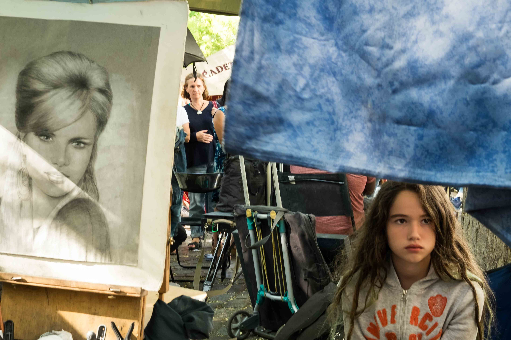
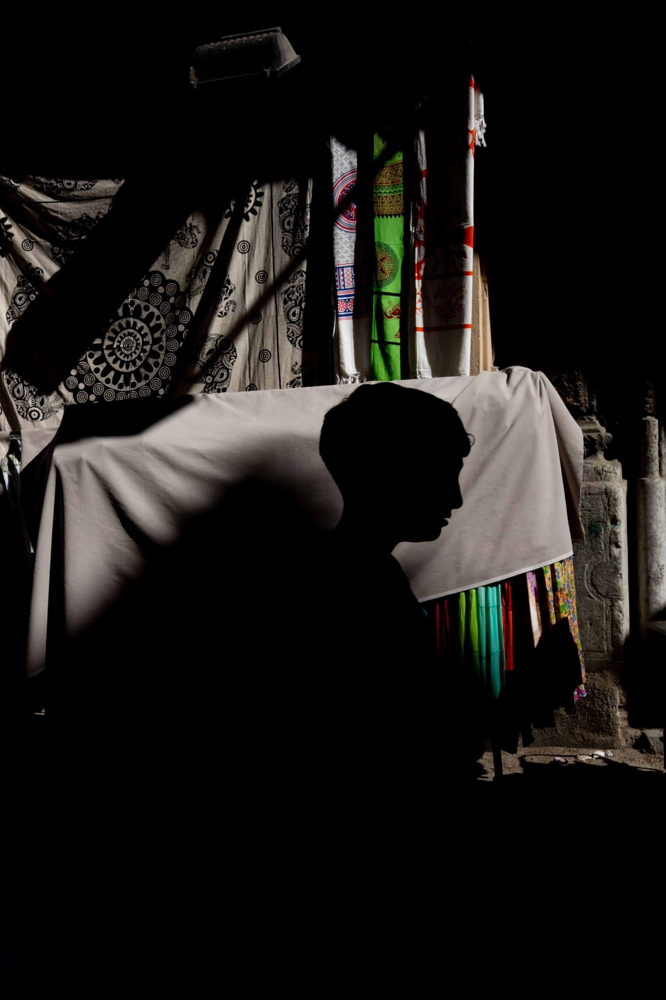
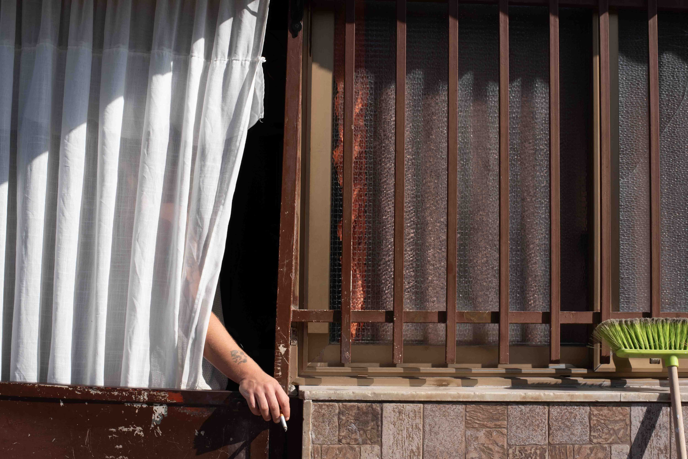
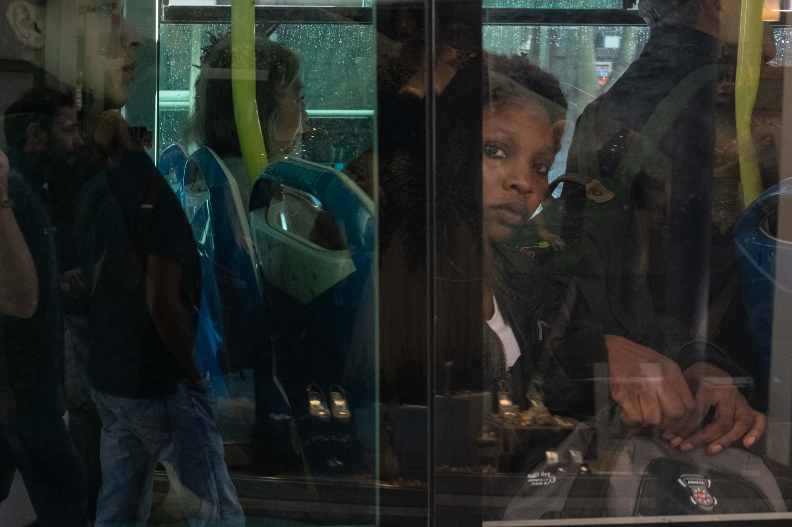

street photography
"How much could we absorb and embrace of a moment of existence that would disappear in an instant?” — Joel Meyerowitz

strade del mondo
Questa serie cattura il mio personale punto di vista su elementi ordinari e allo stesso tempo eccezionali delle strade in giro per il mondo
Apri la serie →

saturi
Questa serie cattura la mia Palermo giocando con luci, ombre e colori saturi, e creando suggestivi punti di vista sull'ordinarietà
Apri la serie →

scopa
Questo è un progetto che inquadra una abitudine prettamente palermitana di estendere il proprio domicilio all'esterno della soglia, lasciando oggetti (nello specifico la scopa) direttamente per strada.
Apri la serie →

gente dei bus
Questo progetto di street si concentra su ciò che accade a bordo di autobus e tram e alle loro fermate: crocevia urbani attraversati senza sosta da vite, storie e destini diversi
Apri la serie →

vicoli vicoli
I vicoli sono sempre gli stessi, e spesso lo sono anche i bambini che li abitano
Apri la serie →